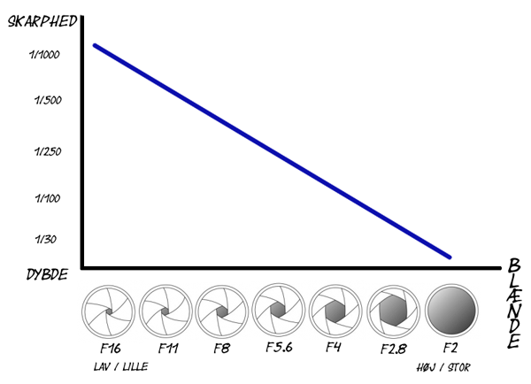
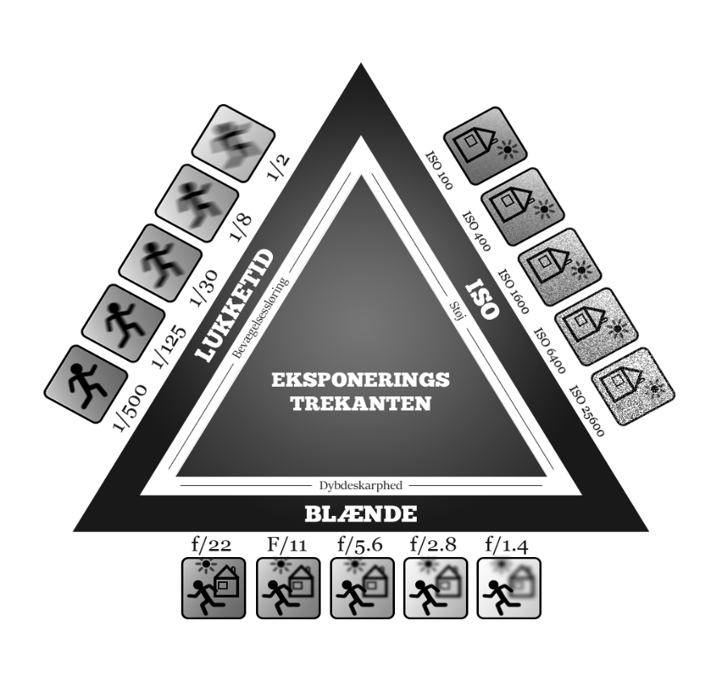

”Typografi er det håndværk, der giver menneskets sprog visuel form”
Det visuelle udtryk på en hjemmeside eller i en tryksag er vigtigt. Gode billeder skaber opmærksomhed, sætter gang i drømmene og optimerer dit salg. De dårlige fotos fortæller en kedelig historie, som ingen gider studere nærmere.
I undervisningen vi anvendt et Canon EOS 80D. Det er meget god at tage billeder men det godt også til video.
Et fotografiapparat består af to hovedkomponenter: kamerahus og objektiv.Objektivet er en samling af linse, jo større objektivet er jo bedre man kan se detalje i billede.
Hvor meget lys kameraet lukker ind under optagelsen af billedet. Det ofteste fejl er at enten er overekponeret(for meget lys)eller undereksponeret(for lidt lys).
Blænde er indstillingen på kameraet, som justerer mængden af lys, der bliver lukket ind gennem objektivet. Blændeåbningen bliver målt i såkaldte f-stops og bestemmer, hvor stor en åbning, der bliver lukket lys ind af.
Lukketiden er den mængde tid som kameraet er åbent og lukker lys ind. Lukketiden bliver målt i sekunder f.eks 1/80 eller1/200. Jo længere en lukketid man bruger mere lys bliver lukket ind og omvendt. Det er en god ide at bruge en lukketid på minimum det dobbelte af din brændvidde(f.eks 1/100 ved 50mm)hvis du tager håndholdte billeder. Hvis du ønsker at bruge en længere lukketid pga. Dårlig belysning vil være en god ide at bruge et objektiv med billedstabilisering eller sætte kamera på et stativ.
kilder: